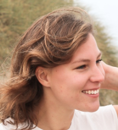
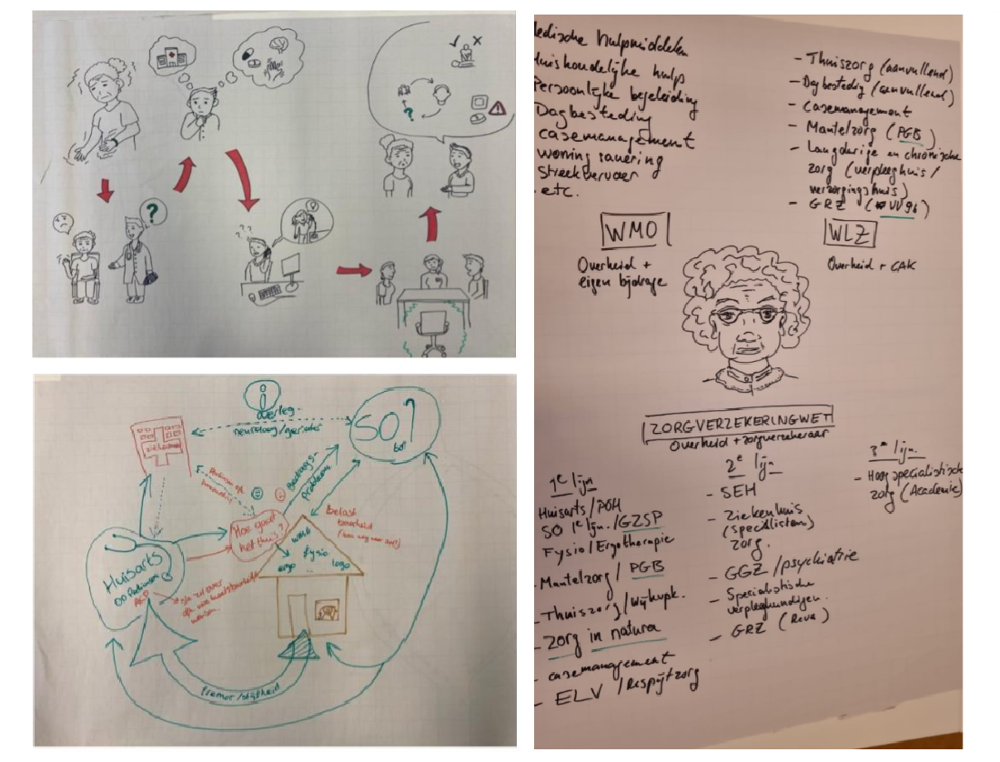
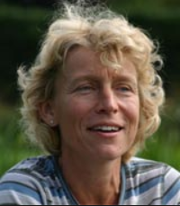
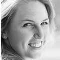
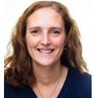
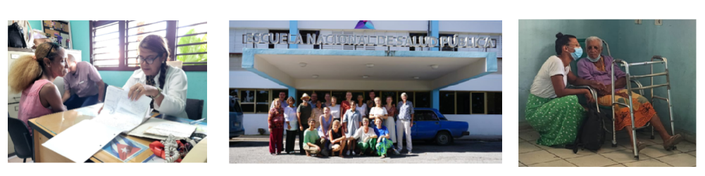
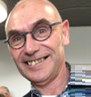
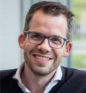

De huisartsopleiding en SOOL werken steeds beter met elkaar samen. In 2023 werd eindelijk de
langgekoesterde wens werkelijkheid toen we in september startten met de gezamenlijke
tweedaagse die voor de huisartsopleiding in de module ouderenzorg valt (of eigenlijk de module
complex chronische zorg). Aios van beide opleidingen volgen twee keer twee dagen onderwijs
samen. En daarna in het derde jaar volgt nog gezamenlijk onderwijs over farmacotherapie, met ook
nog apothekers in opleiding.
Ook in 2023 zijn aios SOOL en huisartsgeneeskunde samen naar Cuba geweest om daar
interprofessioneel van elkaar en van de wijkverpleegkundigen die ook meegingen te leren.
Dus in de samenwerking tussen de twee opleidingen zijn in 2023 vele essentiële stappen gezet.
Want alles wat nu aangeleerd wordt geeft later alleen maar meer en betere samenwerking rondom
kwetsbare ouderen in de eerste lijn.
SQUILL

Paula Broersen, onderwijskundige SOOL; Anna van Daalen, specialist ouderengeneeskunde, coördinator onderwijs basismodule SOOL
In 2023 is SOOL, gezamenlijk met de huisartsopleiding, de samenwerking gestart met het bedrijf Your Next Concepts (YNC). Het doel van de samenwerking is om meer grip te krijgen op en overzicht te creëren in de curricula.
Er is gekozen voor YNC na vele verkennende gesprekken met andere aanbieders, omdat YNC het meest aansloot bij onze wensen en behoeftes. We zijn blij dat in 2023 de knoop definitief doorgehakt is en de samenwerking gestart is.
Het product wat wij van YNC afnemen is SQILL. Dit is software waarbij het opleidingsaanbod op één plek gestructureerd kan worden. Eind 2023 zijn de eerste concrete stappen gezet om met de software te gaan werken.
In 2024 volgt een verdere invulling van het systeem en worden docenten geschoold in het gebruik van de software. De voordelen zijn dat docenten gemakkelijker aanpassingen in hun onderwijsprogramma’s kunnen maken waarbij de wijzigingen automatisch doorgevoerd worden in aios- en docentenhandleidingen. Tevens kunnen er makkelijk overzichten worden gecreëerd die voor docenten een efficiëntie slag betekenen in hun werkwijze.
Interprofessionele onderwijsdagen samen met huisartsen in opleiding
Sinds september 2023 zijn we, na wat logistiek gepuzzel, begonnen met de interprofessionele onderwijsdagen samenwerken in de eerste lijn. AIOS specialisten ouderengeneeskunde krijgen in de ambulante stage periode gezamenlijk met huisartsen in opleiding in hun chronische stage periode twee maal tweedagen onderwijs.
Het werk in de eerste lijn neemt voor specialisten ouderengeneeskunde toe. Dit betekent dat er steeds meer samengewerkt wordt met huisartsen en andere professionals in de eerste lijn. Om toekomstige collega’s hierop goed voor te bereiden is het zinvol onderwijs hierover gezamenlijk te geven. Het docentteam is ook gemixt, al het onderwijs wordt steeds gegeven door een huisarts docent samen met een specialist ouderengeneeskunde docent.
De eerste tweedaagse staat in het teken van kennis maken met elkaar en elkaars werkwijze. Aan bod komen de samenwerkingsafspraken in de eerste lijn, informatie uitwisseling tussen huisarts en specialist ouderengeneeskunde en diagnostiek van dementie. Tussen de tweede tweedaagse is er een groepsopdracht waarbij de AIOS een wijkscan maken en hun bevindingen presenteren. Daarnaast is er onderwijs over het opstellen van een behandelplan, quizvragen over de wet zorg en dwang, financiering en ouderenmishandeling en is er het perspectiefspel waarbij zij inzicht krijgen in verschillende rollen.
Dit gezamenlijk onderwijs wordt als een goede toevoeging gezien naast het reguliere programma, al zijn er natuurlijk nog kinderziekten en zijn we het programma steeds aan het verbeteren op basis van de evaluaties. De volgende stap is deelname van een aantal ouderen als deskundigen aan het onderwijs. De wisselwerking tussen de AIOS met een andere achtergrond en het leren van elkaar is leerzaam en leuk om te zien.
Hieronder een paar groepsopdrachten over een patiëntreis.

Een stafdag bij SOOL

Beatrijs de Leede, opleidingscoördinator SOOL
Drie keer per jaar hebben we bij SOOL een stafdag voor alle docenten, mentoren en het MT die bij de opleiding betrokken zijn. Bij SOOL zijn veel docenten en mentoren betrokken. Vrijwel iedereen heeft een relatief kleine aanstelling omdat er natuurlijk ook gewerkt wordt voor een ouderenzorginstelling of ander onderwijs. Stafdagen zijn daarom belangrijk voor de verbinding, stilstaan bij nieuwe ontwikkelingen en didactische bijscholing en verdieping. De dag wordt voorbereid door mensen uit het MT, de onderwijscoördinatoren en de onderwijskundige.
Wat doen we dan op zo’n dag?
Bij de inloop is altijd tijd voor even bijpraten, koffie met … er is altijd iets gebakken (veel talent) en dan hup aan de slag. Het afgelopen jaar zijn we in de ochtend bezig geweest met de vernieuwingen en samen nadenken over de consequenties die het nieuwe Landelijk Opleidingsplan heeft, een nieuwe tool om het onderwijs goed te kunnen vastleggen, begeleiding van aios vanuit onderwijskundige inzichten enz.
Na de lunch is het dan tijd voor een lichamelijk wat actievere werkvorm en verbinding . Zo hebben we in de Leidse Hout gepoogd van bamboestokken een zo hoog mogelijk bouwwerk te maken en hebben we in Rotterdam gescheurd met de watertaxi en gewandeld.
Met leeg gewaaide hoofden gaan docenten zowel in de basis- als de verdiepingsfase in overleg over aanpassingen en vernieuwingen van onderwijsprogramma’s, nadenken over andere werkvormen, en inhoudelijke thema’s. Voor mentoren is er tijd voor intervisie. Rond 4 uur ronden we af, maken afspraken over het vervolg en na een afrondend drankje gaat iedereen met een hoofd vol nieuwe plannen weer naar huis
Teamwork in de lijn wetenschappelijke vorming


dr. Maaike Scheffers-Barnhoorn, docent-specialist ouderengeneeskunde, coördinator lijn wetenschappelijke vorming SOOL; dr. Milly van de Ploeg, docent-specialist ouderengeneeskunde; dr. Wing Tong, docent-specialist ouderengeneeskunde
De afgelopen jaren zijn er de nodige veranderingen doorgevoerd in de lijn wetenschappelijke vorming. De “CAT (Critical Appraisal of a Topic)”, het “WLO (wetenschappelijk leeronderzoek)” en het middag- en avondreferaat zijn nog de vaste items in de opleiding. Waarbij de collega’s van WO-staf de nodige inbreng mogen hebben om inspirerende gastsprekers te vragen voor de wetenschapsavond. Het “Kritisch lezen” blijft een belangrijke basis voor het wetenschappelijk onderwijs. Echter blijft het de vraag : wat hebben de AIOS nodig om de nieuwste wetenschappelijke inzichten goed toe te kunnen passen op de individuele patiënt? Of zoals een bekend filmpje over EBM (evidence based medicine) meldt, hoe ze zich bekwaam voelen “to draw own conclusions”. En daarin is het buitengewoon waardevol om op te trekken als team, met diversiteit aan wetenschappelijk -, onderwijskundig - en klinische ervaring (als specialist ouderengeneeskunde).
Het is heel fijn om in ons team expertise te hebben op het gebied van kwalitatief onderzoek, en dit wordt nu ook meer structureel geïntegreerd in ons lijnonderwijs (door collega Kirsten Langeveld). Ook zijn we blij met de betrokkenheid van Jenny van der Steen bij het WLO, en de evaluaties die hieruit zijn voortgekomen. Helaas hebben wij afgelopen jaar afscheid genomen van collega Nienke Boogaard. Zij heeft mede vanuit haar onderwijskundige ervaring ook veel heeft bijgedragen aan diverse ontwikkelingen, te weten de verbinding met de huisartsenopleiding (een gezamenlijke EBM toolbox ontwikkeling) en veranderingen op het gebied van het WLO. Zo zijn we in 2023 gestart met het “WLO nieuwe stijl”, waarin AIOS worden begeleid om een eigen thema uit de praktijk uit te werken tot een onderzoeksvoorstel. De eerste ervaringen hiermee zijn zowel door de AIOS als door ons als positief ontvangen. Ondertussen hebben we drie vaste wetenschapsmentoren met 0.22 FTE aanstelling per mentor (= gepromoveerde specialisten ouderengeneeskunde) die de AIOS begeleiden bij de diverse wetenschappelijke opdrachten. We ervaren als staf zijnde veel steun aan elkaar, om ook kritisch te zijn hoe we het onderwijs inspirerend en leerzaam kunnen blijven houden. Een van de “uitdagingen” ofwel “doelstellingen” voor 2024 is hoe we binnen het onderwijs kunnen omgaan met de grote verschillen in wetenschappelijke achtergrond en ervaring bij aanvang van de opleiding. Vanuit SOON bestaat de gedachte: “AIOS in the lead”, waarbij wij als staf zoveel mogelijk “tailor-made” dit onderwijs willen aanbieden aan de AIOS. Kort samengevat: “Work in progress - to be continued!”
Daarnaast is het ook heel mooi dat er steeds meer samenwerking is met de vijf landelijke opleidingsinstituten. Mede vanwege het nieuwe LOP, onlangs ook door SOON gepubliceerd online. In 2023 is er een gezamenlijke publicatie geweest over “Evidence based medicine in de ouderen-geneeskundige praktijk en opleiding” in de Tijdschrift voor Gerontologie en Geriatrie. Dit heeft ook een aanleiding gevormd voor een gezamenlijke workshop op het aankomende Verenso voorjaarscongres 2024 in Den Bosch. Ons inziens een mooie ontwikkeling om met elkaar de competentie “Kennis en Wetenschap” nog meer aandacht te geven, verder te doen ontwikkelen en nog meer te laten aansluiten op de wensen en behoefte van AIOS.
Ouderengeneeskunde als 2e carrière: de ontwikkeling van een aangepast opleidingstraject
1 maart 2023 is gestart met de vervolg opleiding ouderengeneeskunde (VOO) voor artsen met een afgeronde vervolgopleiding. Vijf huisartsen en drie internisten volgden deze opleiding gedurende een half jaar. Het programma, dat samen met andere instituten en SOON tot stand is gekomen is door betrokkenen positief geëvalueerd. Als docenten hebben een specialist ouderengeneeskunde en een gedragswetenschapper vanuit Leiden deelgenomen. Na deze aangepaste basisfase hebben de aios hun opleiding bij Gerion en SOOL vervolgd.
Voor de derde keer, na 2020 en 2022, zijn we met een enthousiaste groep van 16 AIOS huisartsengeneeskunde, specialisten ouderengeneeskunde van PHEG en wijkverpleegkundigen van Buurtzorg in oktober 2023 voor een maand naar Cuba gereisd.
Samenwerken door samen te leren en samen te leven. Dat is de gedachte achter deze interprofessionele keuzestage van drie maanden. In september hebben de groep zich in Nederland verdiept in ons eigen gezondheidssysteem. In oktober zijn we naar Cuba gereisd waar de groep zich, verdeeld in kleinere interprofessionele (IPO) groepen, verdiept heeft in de thema’s levensstijl en voeding, privacy, eenzaamheid, interprofessionele communicatie en mantelzorg. In Cuba is de basis van de gezondheidszorg gelegen in een nauwe samenwerking in de eerste lijn (dus de thuissituatie), wijkgericht werken en veel aandacht voor preventie. Het is leerzaam om te zien hoe zij met weinig middelen hun gezondheidszorg proberen vorm te geven. Afstand nemen van het Nederlandse systeem geeft daarnaast ruimte voor nieuwe inzichten en reflectie.
De IPO groepen werden gekoppeld aan hun eigen huisarts/ wijkverpleegkundige praktijk. Ook waren er inhoudelijke lezingen en werkbezoeken, bijvoorbeeld naar een revalidatie centrum of een diabetes centrum. Natuurlijk werd er in de avond en weekend genoten van het uitgangsleven en de Cubaanse cultuur.
In november hebben de groepen een preventief project ontwikkeld en werd de stageperiode traditiegetrouw afgesloten met weer een goed bezocht slot symposium.
Helaas hebben we ons genoodzaakt gezien om deze stage op dit moment op te schorten vanwege de huidige sociaaleconomische situatie in Cuba. Omdat deze stage door deelnemers, juist door het intensieve interprofessionele leren en het kijken in een andere zorgsysteem, als erg waardevol gezien wordt zijn we nu aan het onderzoeken of we deze stage in een ander land kunnen vormgeven.

Kwaliteitsbeleid SOOL

Marcel Knop, specialist ouderengeneeskunde, waarnemend hoofd SOOL en
kwaliteitscoördinator
Zoals in het jaarbericht van 2022 reeds werd vermeld zijn in de periode september 2022 tot maart 2023 de domeinen 2 Curriculum, 3 Leeromgeving en 4 Toetsen en Beoordelen van het SOON-brede kwaliteitsinstrument Metis onder de loep genomen.
Dit is gedaan middels enquêtes onder de aios, (stage-)opleiders en docenten en mentoren en interviews met het MT, met docenten, met de wetenschapsstaf en met de opleidersvertegenwoordiging.
Uit deze meting komt naar voren dat SOOL op alle onderzochte domeinen voldoende tot goed scoort. We hebben verbeterpunten opgesteld om ook van de voldoendes een goed te maken en daar een planning ook voor gemaakt.
Kern is dat in de communicatie naar aios en (stage-)opleiders puntjes op de i kunnen worden gezet, zoals bijvoorbeeld meer contact van de mentor met de (stage-)opleider.
Omdat per september 2024 het nieuwe landelijk opleidingsplan van kracht is voor de dan startende aios is binnen SOON besloten om in 2024 geen Metis-meting te doen en de tijd te benutten om Metis – waar nodig – bij te stellen bij het nieuwe landelijk opleidingsplan.
De aard en de hoeveelheid werk die het evalueren en visiteren van de stage- en opleidingsinrichtingen en de (stage-) opleiders met zich meebrengt heeft geleid tot het aantrekken van een extra medewerker, waarbij ook direct een kwaliteitsslag kon worden gerealiseerd, zowel wat betreft een kritische blik tijdens de visitaties als een kritische blik op met name het logistieke en administratieve proces van dit onderdeel van de bedrijfsvoering. In 2024 worden hier zaken in verbeterd welke uiteraard ook geborgd zullen worden.
De verbeteringen die in 2022 zijn gerealiseerd zijn gemonitord en verder aangescherpt in 2023, zoals het overleg met de JVT, de opleidersvertegenwoordiging en de communicatie van het MT met de stafleden. Dit loopt verder door in 2024.
Terugblik op 10 jaar “bij SOOL”
dr. Maaike Scheffers-Barnhoorn, docent-specialist ouderengeneeskunde, coördinator lijn wetenschappelijke vorming SOOL
In 2013 begon het avontuur bij SOOL: aanvankelijk als AIOS, en vanaf 2015 in een combinatie traject met een promotie onderzoek als ‘AIOTO-SO’. In de periode van ‘opleiding’ heb ik mij altijd heel erg gesteund gevoeld door SOOL, om mij op de beide werkzaamheden te kunnen richten en daarin te kunnen ontwikkelen. In 2021 heb ik de opleiding tot SO afgerond. En wat een mooie kans om dan ook aan de slag te mogen als docent bij SOOL. En wel met hetgeen waar ik warm voor loop: de wetenschap. Ondertussen was ik bezig met de zogenaamde “laatste loodjes” van het proefschrift. Als kroon op het AIOTO-SO avontuur mocht ik op 2 februari 2023 mijn proefschrift verdedigen op het Rapenburg. Het was een groot feest om dit in aanwezigheid van vele SOOL collega’s te mogen doen!
Ik ben heel dankbaar voor de kans die ik heb ontvangen om mij verder te ontwikkelen in het vakgebied van de ouderengeneeskunde en ondertussen ervaring op te doen in de wetenschappelijke vaardigheden. Een mooie combinatie, die in het AIOTO traject mijns inziens ook goed wordt gefaciliteerd. En vanuit de afdeling goed wordt begeleid: hier valt of staat een dergelijk traject mee is mijn ervaring! Een AIOTO-SO traject bij de PHEG LUMC is dus zeker aan te bevelen!
Ondertussen mag ik elke donderdag mij bezig houden met wetenschap binnen de opleiding. Dit voelt nog steeds als het ‘cadeautje’ van de week. Waarom word ik hier zo blij van? Voor veel AIOS is de wetenschap niet het meest geliefde onderdeel van de opleiding. Ik zie het als een uitdaging om hen te laten zien en vooral ook ervaren dat de wetenschap niet moeilijk hoeft te zijn, en ook leuk kan zijn als je het in de vingers krijgt en er vertrouwen in krijgt. Als wetenschapsdocent c.q wetenschpsmentor trek je intensief op met AIOS op, in het bijzonder in het eerste jaar van de opleiding. Het is mooi om de ontwikkeling en groei te zien op het gebied van de wetenschappelijke vaardigheden. Het geeft energie om de groep “een stevige discussie” te zien voeren tijdens het
Kritisch Lezen. Of een mooie beschouwing te zien neerzetten tijdens een referaat of bij een CAT. En het is mooi om nu het eerste “AIOS cohort” dat ik heb begeleid de opleiding te zien afronden. Specialisten ouderengeneeskunde met passie voor hun vak! Met (meer) zelfvertrouwen in hun wetenschappelijke competentie. En soms ook de motivatie om wetenschappelijke kennis en inzichten te delen (door middel van publicaties).
Daarnaast doe ik door dit werk veel nieuwe inzichten op voor ons vakgebied, door het nakijken van de CATs van onze jonge collega’s, en door de inspirerende ideeën voor het WLO. Prachtig toch?!
Next Level Dokter

Joas Duister, manager externe relaties en strategie bij SBOH
Next Level Dokter is een maatschappelijk initiatief van opleidingen voor artsenberoepen buiten het ziekenhuis en SBOH, de werkgever voor artsen in opleiding. Artsenberoepen midden in de samenleving steviger op de kaart zetten is het doel. Het initiatief is in samenwerking met diverse partijen tot stand gekomen en mede mogelijk gemaakt door het ministerie van Volksgezondheid, Welzijn en Sport (VWS).
Waarom Next Level Dokter?
Het doel van het initiatief Next Level Dokter is om artsenberoepen midden in de samenleving bij studenten geneeskunde en basisartsen steviger op de kaart te zetten. Via het platform www.nextleveldokter.nl, diverse activiteiten in het land en de campagne, inspireren we hen om zich te oriënteren op een artsenberoep midden in de samenleving. Bijvoorbeeld op het beroep huisarts, specialist ouderengeneeskunde, arts Verstandelijk Gehandicapten, jeugdarts, verslavingsarts, forensisch arts of vertrouwensarts. Dit zijn artsen die we hard nodig hebben.
Wie is de next level dokter?
Next level dokters zijn dokters die werken buiten de muren van het ziekenhuis en midden in de samenleving staan. Als next level dokter ben je actief in de wijk, kom je ‘binnen’ bij mensen, beweeg je je in hún omgeving en kan je op diverse momenten van hun leven een rol spelen. Van jong tot oud. Deze dokter kijkt naar de mens in zijn totaliteit en werkt samen met anderen aan de gezondheid van mensen en de samenleving.
Wat doen we met de campagne?
Op het online platform nextleveldokter.nl staat alle informatie over werken en leren buiten het ziekenhuis op één plek. Ook zijn daar veel ervaringsverhalen te vinden van aios. Bijvoorbeeld over hoe next level dokters hun beroep vormgeven in de praktijk en over het maken van keuzes voor de volgende stap na de studie geneeskunde. Studenten en basisartsen kunnen hier ook een gratis adviesgesprek inplannen met één van de next level coaches over wat je allemaal kunt doen om je
een goed beeld te vormen van de mogelijkheden buiten het ziekenhuis. Natuurlijk zijn we met Next Level Dokter ook in het land te vinden op verschillende faculteiten. Bij carrière-events en met onze eigen Next Level Dokter Collegetour waarin drie aios het hemd van het lijf kan worden gevraagd over hoe het is om next level dokter te zijn. Op 27 mei is de eerste collegetour live in Amsterdam. Online deelnemen kan ook.
Over de dr. House avond in Leiden
Op 13 februari toog ik op uitnodiging van het hoofd van SOOL Victor Chel naar het Leidse voor een Dr. House avond voor geneeskundestudenten en basisartsen. Nu was ik wel vaker op geneeskundefaculteiten geweest om praatjes te houden, maar dat na de nasimaaltijd het bier de collegezaal in mocht bij het inhoudelijke gedeelte van de avond had ik niet eerder meegemaakt. Het gaf gelijk een ontspannen indruk van een mooie avond.
Wie Dr. House nog niet kent: House is een briljante dokter gespecialiseerd in besmettelijke infectieziekten. Hij is het hoofd van de afdeling 'Diagnostic Medicine' in het Princeton Plainsboro Teaching Hospital, waar hij een team van drie slimme dokters onder zich heeft. House kan totaal niet omgaan met patiënten en probeert ze ook als het maar even kan te ontwijken. Omgaan met collega’s is ook niet zijn sterke punt en hij is in zijn communicatie erg bot en direct. Ik zou zeggen: het tegenovergestelde van onze next level dokters die juist voor het patiëntenwelzijn gaan, de mens als geheel zien, open kunnen communiceren en ook goed moeten kunnen samenwerken met andere next level dokters.
Ik mocht een praatje houden over Next Level Dokter, onze campagnefilm laten zien en kreeg daarbij goede vragen uit de zaal. Zo bleken vertrouwensartsen en artsen TBC-bestrijding totaal onbekend voor de aanwezigen. Vervolgens werd er na een inleiding van prof. Wilco Achterberg telkens een fragment bekeken van een Dr. House aflevering en reflecteerde een bedrijfsarts, twee huisartsen en een specialist ouderengeneeskunde op wat we gezien hadden en op een stelling. Dit leverde een rijk panelgesprek op en discussie met de zaal.
Naderhand natuurlijk een borrel met heerlijke Leidse biertjes waar nog tot laat mooie gesprekken werden gevoerd. Uiteraard ging iedereen voorzien van een duurzame Next Level Dokter beker (met QR code naar www.nextleveldokter.nl) huiswaarts. Nu maar hopen op een mooie en verhoogde instroom in de vervolgopleidingen!